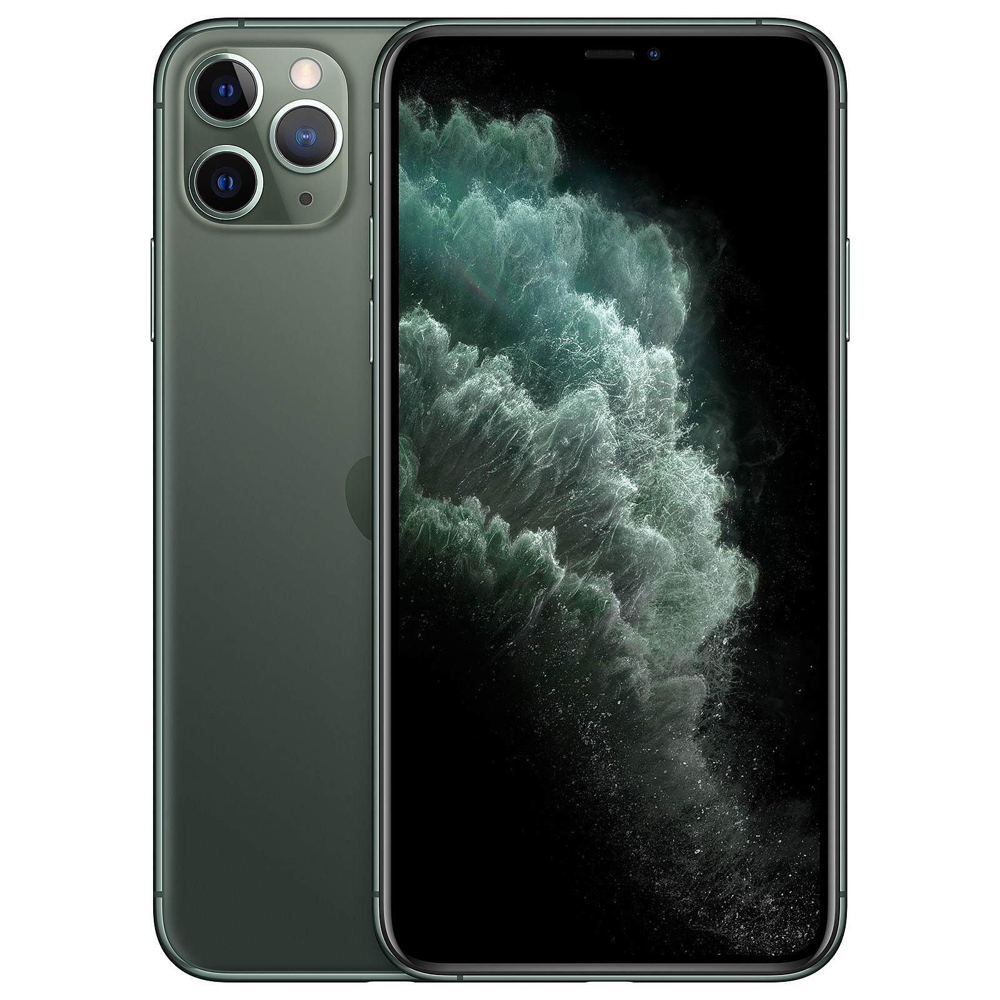
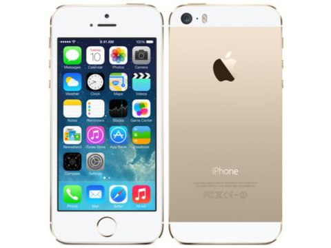

My name is Nikachu.
使っているスマホ（2021/12/08最新版）
使っているスマホを紹介します。
メインスマホ

iPhone 11 Pro
容量
64GB
色
スペースグレイ
もう２年ぐらい使っているスマホです。使いやすいのでiPhoneにしてますが、いろいろなことができるのはAndroidです。特に不満もないですが重さが重たいぐらいかな
iPhone 11 Pro - 技術仕様 (日本)
サブスマホ（まったく使ってない）

iPhone 5s
容量
64GB
色
ゴールド
少し前に
イオシス
の中古で買いました。使用用途はIIJmioのプリペイドプランをテザリングで使うためですね。 電池持ちも古いから悪いので絶対おすすめしませんが、充電器にずっとさせる状況であればいいかも。 あとテザリングしてるとめちゃくちゃ熱くなる。ネットサーフィンしてるだけでもカイロみたいにあったかいですから。おすすめしません。というか買う人いないですね。
iPhone 5s - 技術仕様 (日本)